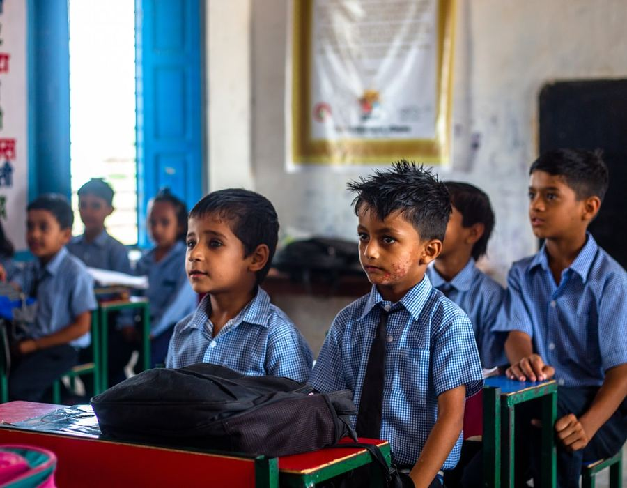
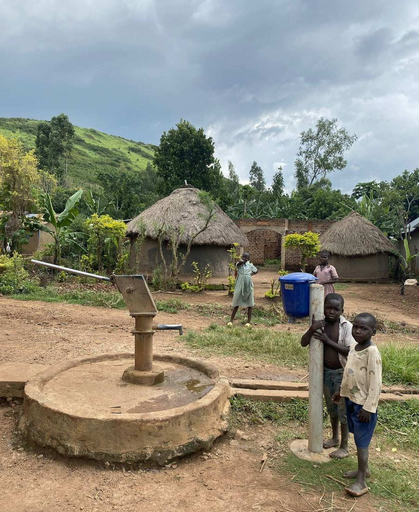

Home / Programs
What We Fund
Annual grants of $5,000–$50,000 flow to vetted grassroots partners delivering nutrition, education, and water & sanitation to vulnerable children.
Food Programs
Daily staples (rice, lentils, cooking oil, eggs and milk) plus vitamins reach over 1,000 children every day through the grassroots partners we fund.
Education
From 2006–2016 we sponsored girls' education through elementary and high school at Loreto Sealdah School in Calcutta. Today we fund school supplies, textbooks, and ongoing education sponsorships.
Water, Sanitation & Hygiene
We've built schools, classrooms, toilets and wells across Calcutta, Hyderabad, Kaliayampoondi, Delhi and Pune (India); Karachi (Pakistan); Kathmandu and earthquake-affected villages (Nepal); Lumwana West (Zambia); Johannesburg (South Africa); and Croix de Bouquet (Haiti).
Who benefits
Every program centers the most vulnerable children
Programs in the field
What your grant looks like on the ground

Classrooms that stay open
Grants cover desks, textbooks, uniforms and tuition so a single unpaid fee doesn't end a child's schooling.

Clean water, close to home
Wells, latrines and handwashing stations cut down the disease and lost school-days that come with unsafe water.
Where we work
14 countries, one grassroots model
Tap a country to see where WASH infrastructure has been built.
India
Pakistan
Nepal
Zambia
South Africa
Haiti
Ethiopia
Ukraine
2024 / 2025 partners
Our Grantee Partners
We fund organizations already succeeding on the ground, helping them sustain and expand proven work.
Child Haven International
Residential care for 1,300 formerly destitute children and women, with dietary, health and sanitation support.
NFBM: Jagriti School for the Blind
Education, lodging and boarding for ~450 underprivileged, visually challenged rural girls; nutrition support since 2016–17.
Voice of Children
Shelter, nutrition, clothing and protective accommodation for family-separated, street-connected and exploited children.
CBR: Community-Based Rehabilitation
Daily meals for children with multiple disabilities at special schools, alongside music therapy and computer classes.
Orphans Aid Society (OAS)
Covers school costs for orphans living at home with a single caretaker; supported since 2022.
ASDEPO
Treats Severe Acute Malnutrition; provided nutrient-rich food to 450 children and currently supports 625 children in recovery across the Borena Zone and Tigray Region.
The Lighthouse Stimulation Center
Balanced daily meals and uniforms for disabled children, improving quality of life and self-esteem.